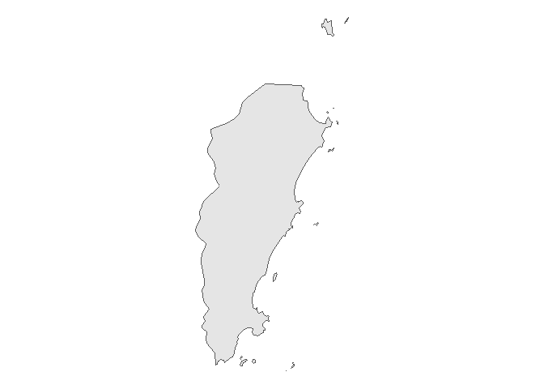
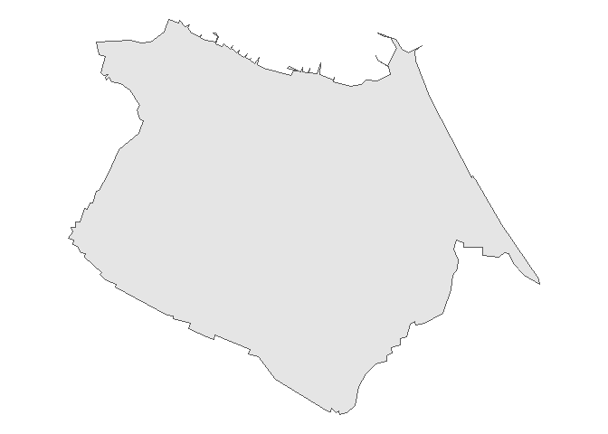

O objetivo de milton é oferecer ferramentas para facilitar o georreferenciamento de dados no Brasil.
Georreferenciando endereços
O pacote permite que você georrefenrencie seus dados com:
- Endereço
- CEP
av <- get_addr("Avenida pequeno príncipe")
av
#> Geometry set for 1 feature
#> Geometry type: POINT
#> Dimension: XY
#> Bounding box: xmin: -48.4922 ymin: -27.68202 xmax: -48.4922 ymax: -27.68202
#> Geodetic CRS: SIRGAS 2000
#> POINT (-48.4922 -27.68202)
# CEP da avenida pequeno principe
get_addr("88063-000")
#> Geometry set for 1 feature
#> Geometry type: POINT
#> Dimension: XY
#> Bounding box: xmin: -48.49422 ymin: -27.6804 xmax: -48.49422 ymax: -27.6804
#> Geodetic CRS: SIRGAS 2000
#> POINT (-48.49422 -27.6804)Identificando pertencimento
Carregando funções de utilidade para ler e manipular dados.
library(tidyverse)
#> -- Attaching packages --------------------------------------- tidyverse 1.3.1 --
#> v ggplot2 3.3.5 v purrr 0.3.4
#> v tibble 3.1.5 v dplyr 1.0.7
#> v tidyr 1.1.4 v stringr 1.4.0
#> v readr 2.0.2 v forcats 0.5.1
#> -- Conflicts ------------------------------------------ tidyverse_conflicts() --
#> x dplyr::filter() masks stats::filter()
#> x dplyr::lag() masks stats::lag()Também é possível identificar o município e o setor censitário de um endereço. Para tanto precisamos dos endereços que vamos localizar e as geometrias em que eles devem ser identificados.
mun <- geobr::read_municipality(year = 2018) %>%
rename(geometry = geom)A função geopart permite fazê-lo.
geo_av <- geopart(av, mun)
ggplot(mun[geo_av, ]) +
geom_sf() +
theme_void()
A API do pacote foi construída buscando permitir o uso do pipe (%>%).
geo_cast <- get_addr("Estádio Arena Castelão") %>%
geopart(mun)
ggplot(mun[geo_cast, ]) +
geom_sf() +
theme_void()
Para a identificação do setor censitário também é possível usar a mesma função. Para tanto deve-se usar como segundo argumento os polígonos dos setores censitários. Uma forma fácil de acessar esses polígonos é usando o pacote geobr: geobr::read_census_tract.
setores <- geobr::read_census_tract(3550308) %>%
rename(geometry = geom)Com estes polígonos em mãos é possível identificar o setor censitário ao qual determinado endereço pertence.
epm <- get_addr("Rua botucatu, 740")
geo_epm <- geopart(epm, setores)
ggplot(setores[geo_epm, ]) +
geom_sf() +
theme_void()
Outra funcionalidade do pacote permite relacionar endereços distintos, medindo suas distâncias ou identificando o local mais próximo.
Suponhamos que tenhamos uma tabela com os endereços os pacientes A, B e C:
pacientes <- tibble(
paciente = LETTERS[1:3],
endereco = c(
"Av. Dr. Altino Arantes, 941",
"Rua Gandavo, 349, São Paulo",
"Rua Bela cruz, 40"
)
) %>%
mutate(latlon = map(endereco, get_addr))
pacientes
#> # A tibble: 3 x 3
#> paciente endereco latlon
#> <chr> <chr> <list>
#> 1 A Av. Dr. Altino Arantes, 941 <POINT (-46.6...>
#> 2 B Rua Gandavo, 349, São Paulo <POINT (-46.6...>
#> 3 C Rua Bela cruz, 40 <POINT (-46.5...>E agora é possível calcular a distância entre esses pontos e a Escola Paulista de Medicina.
pacientes %>%
mutate(distancia_km = map_dbl(latlon, distancia, y = epm))
#> # A tibble: 3 x 4
#> paciente endereco latlon distancia_km
#> <chr> <chr> <list> <dbl>
#> 1 A Av. Dr. Altino Arantes, 941 <POINT (-46.6...> 0.752
#> 2 B Rua Gandavo, 349, São Paulo <POINT (-46.6...> 0.827
#> 3 C Rua Bela cruz, 40 <POINT (-46.5...> 6.82Há um conjunto de funções que permite identificar, por exemplo, o local mais adequado para tratar determinado paciente:
-
min_distretorna a menor distância; -
nearplaceretorna o local mais próximo.
Desse modo, dado um conjunto de hospitais:
hospitais <- c("Hospital São Paulo",
"Hospital Dom Alvarenga",
"Hospital Paulistano")
geo_hospitais <- hospitais %>%
map(get_addr) %>%
reduce(c)É possível identificar a distância dos hospitais para o paciente C:
paciente_C <- pacientes$latlon[[3]]
distancia(paciente_C, geo_hospitais)
#> [,1] [,2] [,3]
#> [1,] 6.802523 3.571139 6.42353Assim como o hospital de menor distância.
min_dist(paciente_C, geo_hospitais)
#> [1] 3.571139E o hospital mais próximo.
Usando CEPs
Tomemos um conjunto qualquer de CEPs.
df_ceps <- tibble(
cep = c("01215010", "01508010", "01519000", "01526010", "02180080",
"02849170", "03347070", "03380150", "03590080", "03737230",
"04011060", "04018000", "04050060", "04108001", "04111000",
"04233140", "04421150", "04433180", "04633030", "04813190",
"04853185", "05010000", "05409002", "05540020", "05790230",
"06000150", "07717170", "07858150", "07865115", "08062320",
"08140000", "08142710", "08370220", "08421520", "08700000",
"08770130", "08790000", "08793030", "09911550")
)Assumamos que representam o endereço de pacientes cujas condições estão apresentadas na tabela abaixo.
set.seed(123)
df_pacientes <- df_ceps %>%
mutate(
id = seq_along(cep),
condicao = sample(c(0, 1), length(cep), replace = TRUE)
)
df_pacientes
#> # A tibble: 39 x 3
#> cep id condicao
#> <chr> <int> <dbl>
#> 1 01215010 1 0
#> 2 01508010 2 0
#> 3 01519000 3 0
#> 4 01526010 4 1
#> 5 02180080 5 0
#> 6 02849170 6 1
#> 7 03347070 7 1
#> 8 03380150 8 1
#> 9 03590080 9 0
#> 10 03737230 10 0
#> # ... with 29 more rowsAgora usemos as funções do pacote para complementar nosso bando de dados com:
- Georreferenciamento dos pacientes
- Identificação do setor censitário em que os pacientes estão localizados
- Relacionamento com dados do IPVS do referido setor censitário
- Identificação do ponto mais próximo de cada paciente (dado uma lista)
- Cálculo da distância entre os pacitentes e o ponto definido em 4)
- Criar mapa dos pacientes (leaflet)
2. Identificação do setor censitário em que os pacientes estão localizados
setor_paciente <- geo_pacientes %>%
mutate(idx = map_int(ponto, geopart, setores),
setor = setores$code_tract[idx])3. Relacionamento com dados do IPVS do referido setor censitário
Ler dados do Índice Paulista de Vulnerabilidade Social (IPVS).
ipvs <- ler_ipvs() %>%
select(setor = codigo_do_setor_censitario,
idade_media_setor = idade_media_das_pessoas_responsaveis,
p_renda_meio_sm_setor = proporcao_de_domicilios_particulares_com_rendimento_nominal_mensal_de_ate_1_2_s_m,
p_alfabetizadas_setor = proporcao_de_pessoas_responsaveis_alfabetizadas)Relacionar com dados dos pacientes
paciente_ipvs <- setor_paciente %>%
left_join(ipvs, by = "setor")
paciente_ipvs
#> # A tibble: 39 x 10
#> cep id condicao endereco ponto idx setor idade_media_set~
#> <chr> <int> <dbl> <chr> <list> <int> <chr> <dbl>
#> 1 01215010 1 0 Rua Helvétia <POINT ~ 13923 35503~ 41.7
#> 2 01508010 2 0 Rua Taguá <POINT ~ 10240 35503~ 44.3
#> 3 01519000 3 0 Rua do Lavapés <POINT ~ 10223 35503~ 37.6
#> 4 01526010 4 1 Rua Tenente O~ <POINT ~ 10167 35503~ 48.4
#> 5 02180080 5 0 Rua Soldado M~ <POINT ~ 17418 35503~ 50.0
#> 6 02849170 6 1 Rua Bernardo ~ <POINT ~ 1001 35503~ 48.3
#> 7 03347070 7 1 Rua Maestro A~ <POINT ~ 107 35503~ 56.0
#> 8 03380150 8 1 Rua Cruzeiro ~ <POINT ~ 16920 35503~ 48.6
#> 9 03590080 9 0 Rua Padre Man~ <POINT ~ 536 35503~ 49.4
#> 10 03737230 10 0 Rua Conceição~ <POINT ~ NA <NA> NA
#> # ... with 29 more rows, and 2 more variables: p_renda_meio_sm_setor <dbl>,
#> # p_alfabetizadas_setor <dbl>4. Identificação do ponto mais próximo de cada paciente (dado uma lista)
Dados dois pontos, identificar aquele mais próximo de cada paciente.
ps <- c(get_addr("04017-030"), get_addr("Hospital Albert Einstein"))
nomes_ps <- c("Caism Vila Mariana", "Einstein")
paciente_ipvs %>%
head(9) %>%
select(id, condicao, cep, endereco, ponto) %>%
mutate(ponto = reduce(ponto, c),
prox = nomes_ps[map(nearplace(ponto, ps), sf::st_equals, ps) %>% unlist()])
#> # A tibble: 9 x 6
#> id condicao cep endereco ponto prox
#> <int> <dbl> <chr> <chr> <POINT [°]> <chr>
#> 1 1 0 01215010 Rua Helvétia (-46.64122 -23.5331) Caism Vi~
#> 2 2 0 01508010 Rua Taguá (-46.63652 -23.56167) Caism Vi~
#> 3 3 0 01519000 Rua do Lavapés (-46.62748 -23.56164) Caism Vi~
#> 4 4 1 01526010 Rua Tenente Otávio Go~ (-46.63209 -23.56342) Caism Vi~
#> 5 5 0 02180080 Rua Soldado Manasses ~ (-46.56587 -23.51827) Caism Vi~
#> 6 6 1 02849170 Rua Bernardo Rincon (-46.68629 -23.46706) Caism Vi~
#> 7 7 1 03347070 Rua Maestro Artur Eli~ (-46.5665 -23.56242) Caism Vi~
#> 8 8 1 03380150 Rua Cruzeiro dos Peix~ (-46.53379 -23.57575) Caism Vi~
#> 9 9 0 03590080 Rua Padre Manuel Barr~ (-46.48273 -23.54557) Caism Vi~5. Cálculo da distância entre os pacitentes e o ponto definido em 4)
paciente_ipvs %>%
head(9) %>%
select(id, condicao, cep, endereco, ponto) %>%
mutate(ponto = reduce(ponto, c),
# Em quilometros
distancias = distancia(ponto, ps))
#> # A tibble: 9 x 6
#> id condicao cep endereco ponto distancias[,1] [,2]
#> <int> <dbl> <chr> <chr> <POINT [°]> <dbl> <dbl>
#> 1 1 0 01215010 Rua Helvét~ (-46.64122 -23.5331) 6.08 6.56
#> 2 2 0 01508010 Rua Taguá (-46.63652 -23.56167) 2.90 3.38
#> 3 3 0 01519000 Rua do Lav~ (-46.62748 -23.56164) 3.09 3.57
#> 4 4 1 01526010 Rua Tenent~ (-46.63209 -23.56342) 2.77 3.25
#> 5 5 0 02180080 Rua Soldad~ (-46.56587 -23.51827) 10.7 11.1
#> 6 6 1 02849170 Rua Bernar~ (-46.68629 -23.46706) 14.3 14.7
#> 7 7 1 03347070 Rua Maestr~ (-46.5665 -23.56242) 7.81 8.07
#> 8 8 1 03380150 Rua Cruzei~ (-46.53379 -23.57575) 10.7 10.9
#> 9 9 0 03590080 Rua Padre ~ (-46.48273 -23.54557) 16.5 16.76. Criar mapa dos pacientes (leaflet)
library(leaflet)
#> Warning: package 'leaflet' was built under R version 4.1.2
lat_ps <- unlist(ps[[1]])[2]
lon_ps <- unlist(ps[[1]])[1]
paciente_ipvs %>%
head(9) %>%
mutate(lon = map_dbl(ponto, ~unlist(.x)[1]),
lat = map_dbl(ponto, ~unlist(.x)[2])) %>%
leaflet() %>%
addTiles() %>% # Add default OpenStreetMap map tiles
addCircleMarkers(~lon, ~lat, label = ~cep, color = ~ifelse(condicao == 1, "red", "blue")) %>%
addMarkers(lon_ps, lat_ps, label = "Caism Vila Mariana") %>%
addLegend(colors = c("red", "blue"), labels = c("Com condição", "Sem condição"))